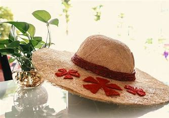

Làng nghề chổi bó Mỹ An khiến cho nhiều bạn trầm trồ khi được tận mắt chứng kiến những thao tác thoăn thoắt của nghệ nhân. Điều này vừa khơi dậy sự thích thú vừa quảng bá được sản phẩm đến với những người bạn tại các vùng khác. Du lịch Bến Tre thì không nên bỏ qua làng nghề này nhé!
Đường đi đến làng nghề chổi bó Mỹ An không quá khó nhưng khá xa. Bạn phải di chuyển đến Bến Tre, sau đó xuôi theo Quốc lộ 60, đi qua cầu Hàm Luông. Tiếp đến bạn đi thẳng thêm khoảng 43km nữa sẽ đến xã Mỹ An, huyện Thạnh Phú cũng chính là làng nghề chổi bó. Địa điểm này sở hữu địa hình đặc biệt bao gồm sông nước, kênh rạch chằng chịt được tách ra từ 2 xã An Thạnh và Mỹ Hưng trước đây. Người dân nơi đây luôn cố gắng duy trì và từng bước phát triển làng nghề chổi bó Mỹ An để càng ngày càng mở rộng thị trường.
Ban đầu, làng nghề chổi bó Mỹ An chỉ có vài hộ gia đình tham gia với hình thực nhỏ lẻ nhằm phục vụ nhu cầu của người dân địa phương là chủ yếu. Cho đến năm 2006, làng nghề này mới bắt đầu phát triển mạnh mẽ và trở thành nơi cung ứng sản phẩm cho thị trường Việt Nam và quốc tế như Campuchia, Lào. Năm 2011, loại hình chổi bó này đã được công nhận là làng nghề tiểu thủ công nghiệp thứ 18 của tỉnh Bến Tre. Từ thành tích đó đã mở ra một hướng mới cho việc phát triển sản phẩm, nâng cao thu nhập cho người dân địa phương. Năm 2012, làng nghề bó chổi Mỹ An một lần được vinh danh là sản phẩm công nghiệp nông thôn tiêu biểu của tỉnh. Với những bước tiến không ngừng nghĩ như thế, các sản phẩm làm từ dừa tại Bến Tre của làng nghề chổi bó Mỹ An xứng đáng có được sự công nhân từ phía người tiêu dùng và hy vọng sản phẩm này sẽ vươn xa hơn nữa.
Làng nghề chổi bó Mỹ An Điểm độc đáo của những chiếc chổi bó Mỹ An là người dân ở đây biết tận dụng lá dừa, lá cau, dừa nước để bó thành những sản phẩm đa dạng rất lạ. Từ những vật liệu thân thương như thế, nhà nhà, người người cùng quay dây cước, cùng bó, cùng xe làm nên những chiếc chổi chặt tay, đẹp mắt. Nghề chổi bỏ ở xã cù lao Mỹ An hình thành từ lâu, xuất phát từ ấp An Hòa, ban đầu chỉ một vài hộ làm chỉ để bán trong xã. Khoảng đến năm 2006 thì nghề độc đáo ày phát triển mạnh ra toàn xã, và trở thành nơi cung cấp sản phẩm chổi bó cho nhiều nơi trong nước, đặc biệt còn xuất khẩu sang Lào và Campuchia. Hiện tại, làng nghề Mỹ An có hơn 200 hộ gia đình gắn bó với nghề này, trong đó có hơn 30 cơ sở sản xuất lớn để buôn bán ở nhiều nơi. Về làng nghề bó chổi Mỹ An, đi đến đâu cũng thấy hình ảnh của những người bó chổi, già trẻ, gái trai ai ai cũng biết đến nghề truyền thống này. Hình ảnh chiếc chổi bó từ cọng dừa đã gắn bó thân thiết với đời sống của người dân nơi đây. Đến nay, làng nghề chổi bó Mỹ An đã được công nhận là sản phẩm công nghiệp tiêu biểu của tình Bến Tre. Trong những tour du lịch Bến Tre đến với xã cù lao Mỹ An hôm nay, thì làng nghề bó chổi là một điểm đến du lịch văn hóa độc đáo mà ai cũng muốn ghé đến.
